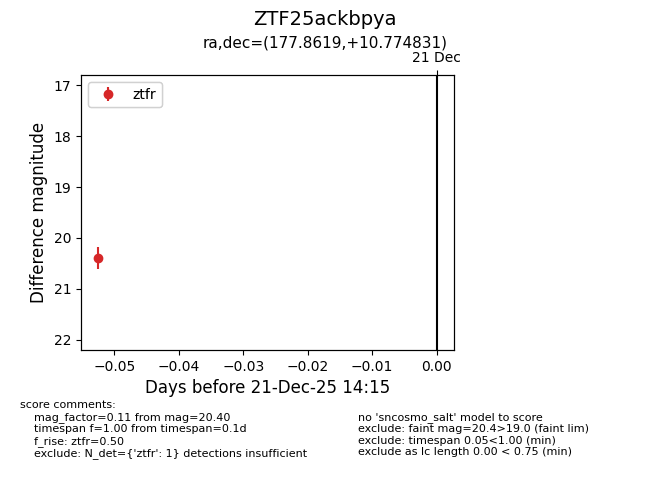
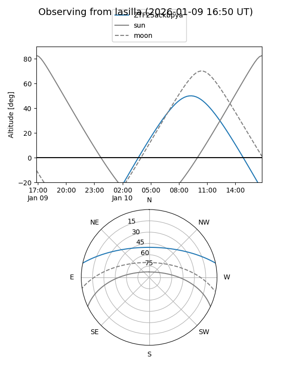
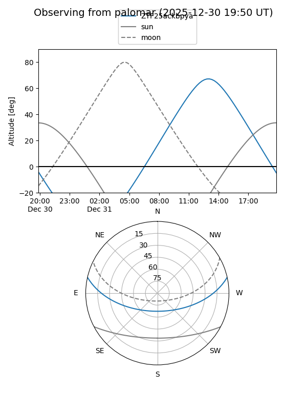

ZTF25ackbpya
Target ZTF25ackbpya at 2026-01-09 12:49
Aliases and brokers:
FINK: link
Lasair: link
ALeRCE: link
alt names
ZTF25ackbpya (ztf,fink_ztf)
Coordinates:
equatorial (ra, dec) = 177.8619,+10.77483
equatorial (HMS+DMS) = 11:51:26.86,+10:46:29.39
galactic (l, b) = (259.2622,+68.39772)
Flags:
Photometry:
last ztfr=20.40
1 ztfr detections
Lightcurve

Visibility


Additional plots